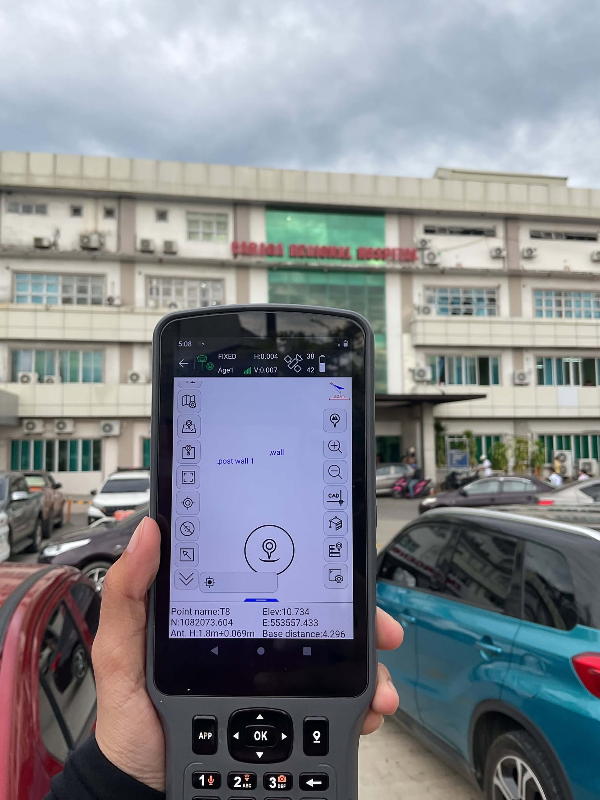
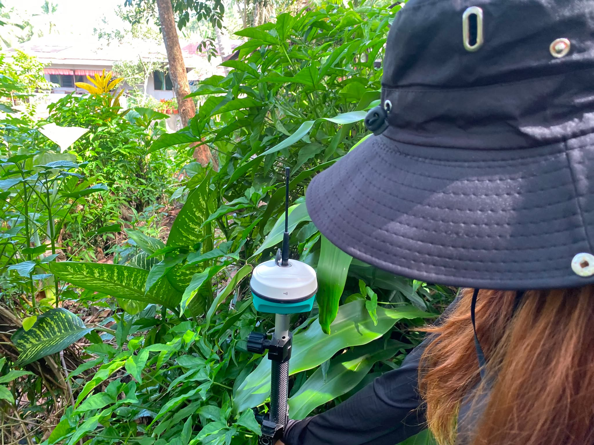
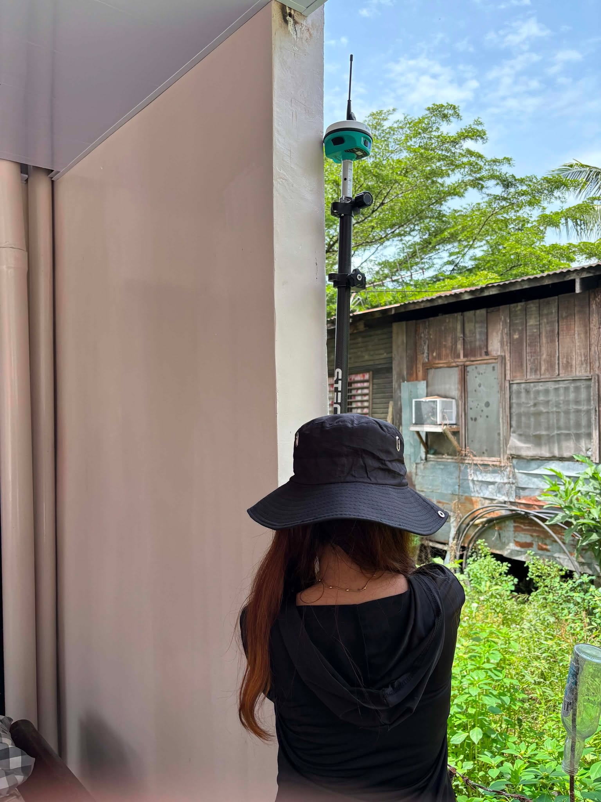
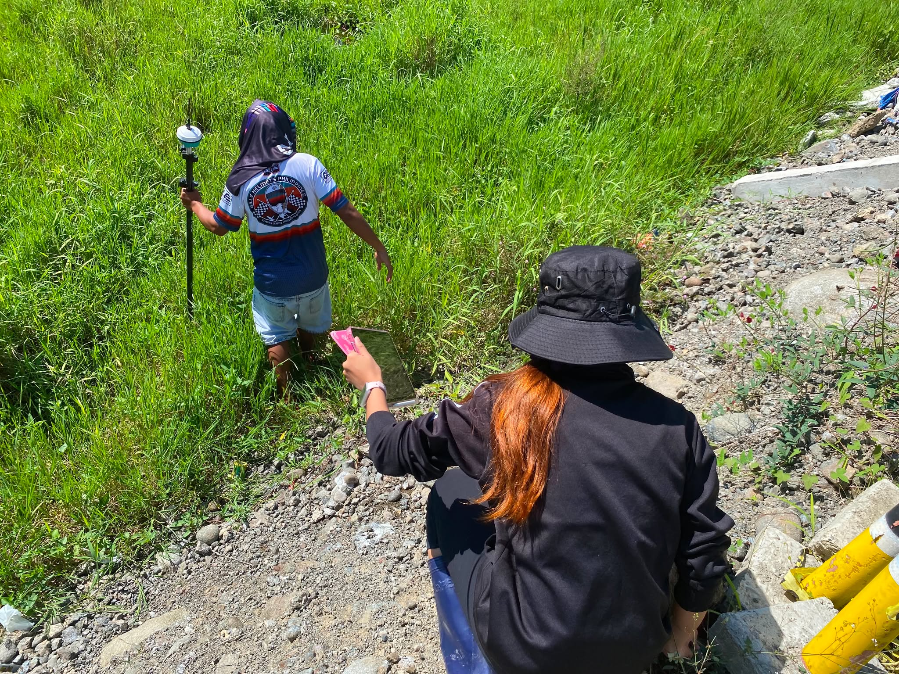
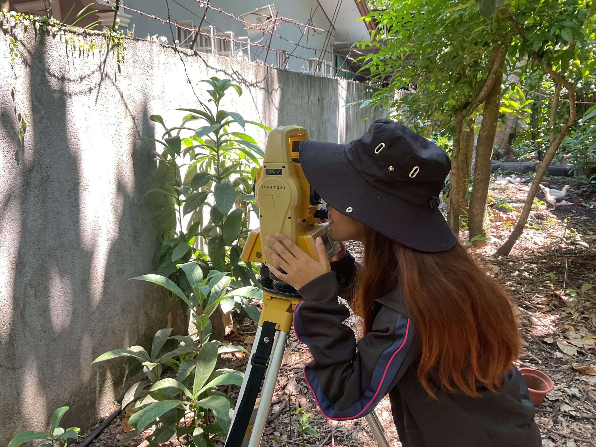
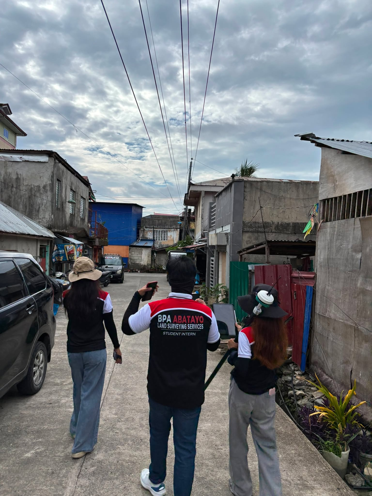
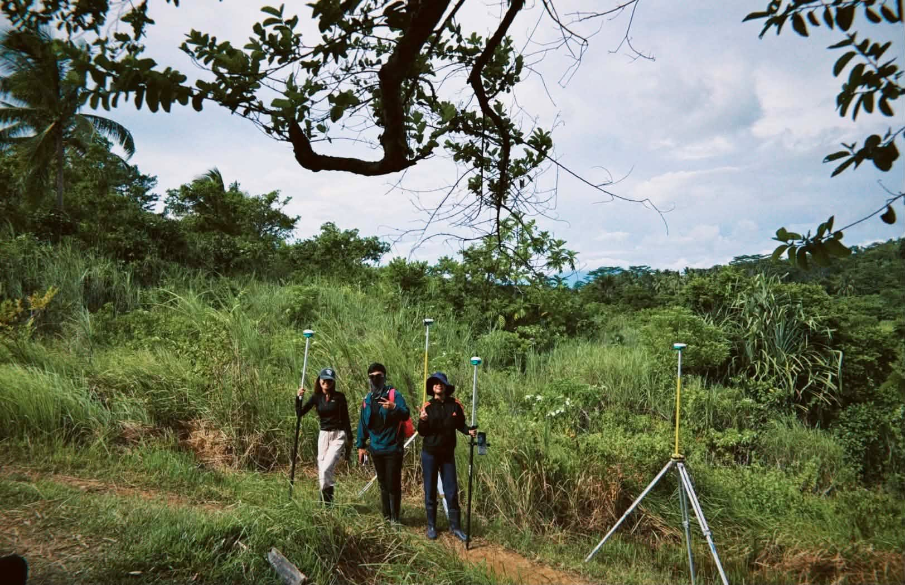
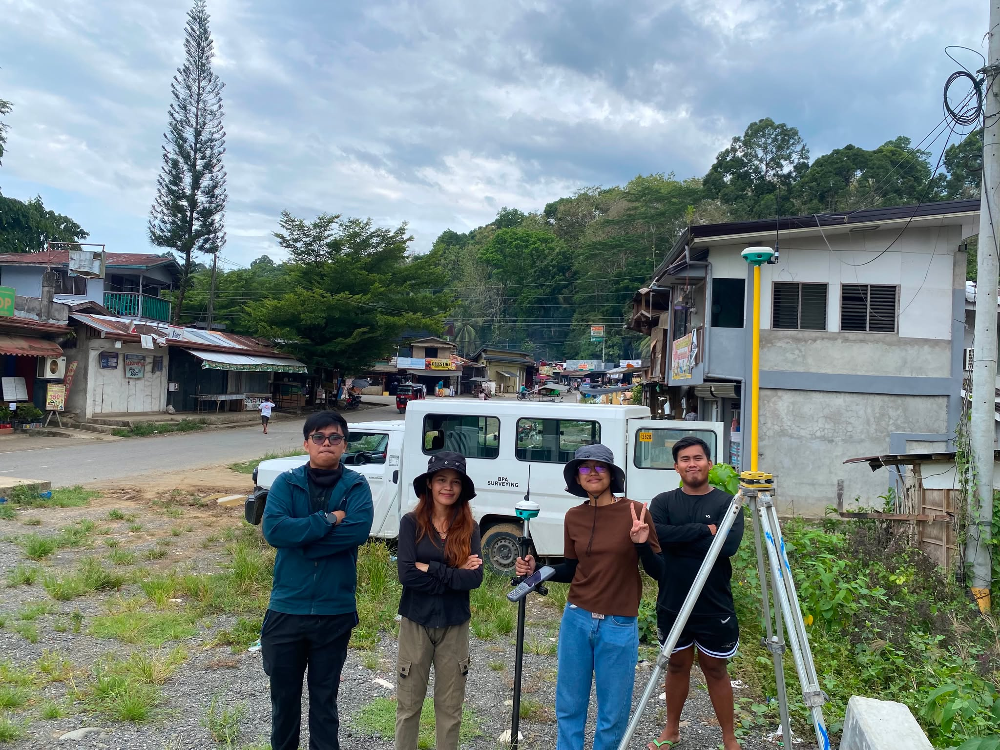
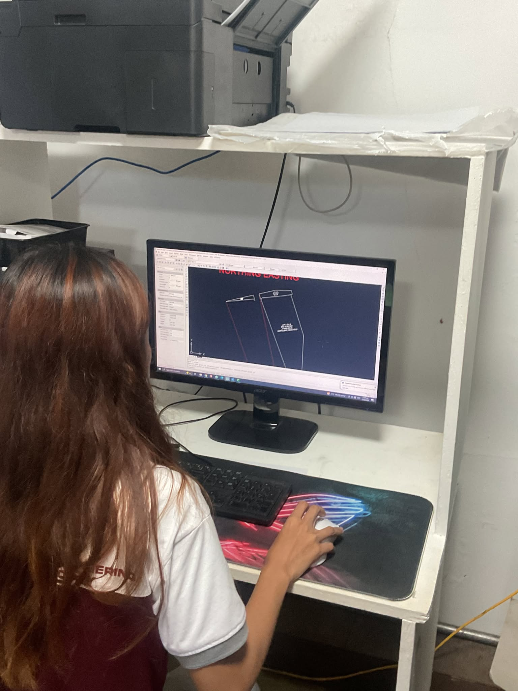

BPA Abatayo
Work Experience





Surveyor




On - the - Job - Trainee
at BPA Abatayo Land Surveying Services
The On-the-Job Training at BPA Abatayo Land Surveying Services provided practical exposure to professional land and engineering surveying operations, including relocation, subdivision, topographic, and construction surveys. Training covered GNSS/RTK and Total Station surveying, field data acquisition, survey computations, AutoCAD drafting, technical documentation, and DENR-related land management procedures. The experience strengthened technical proficiency, precision, and professional competence while providing valuable insight into the responsibilities and standards of Geodetic Engineering practice.